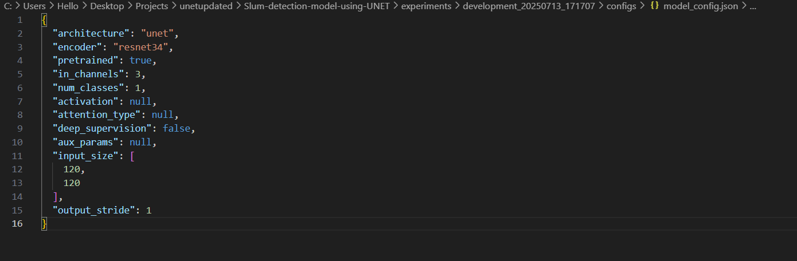
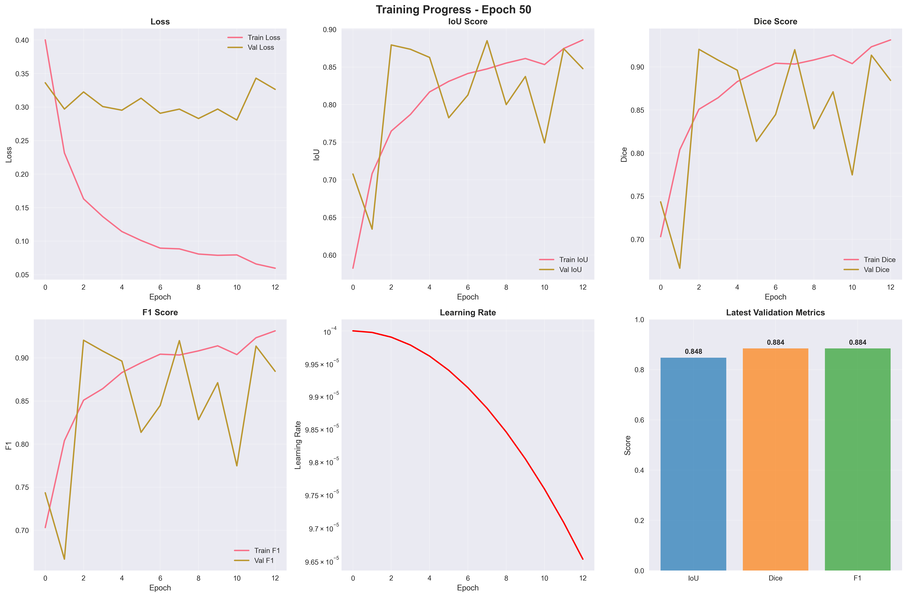
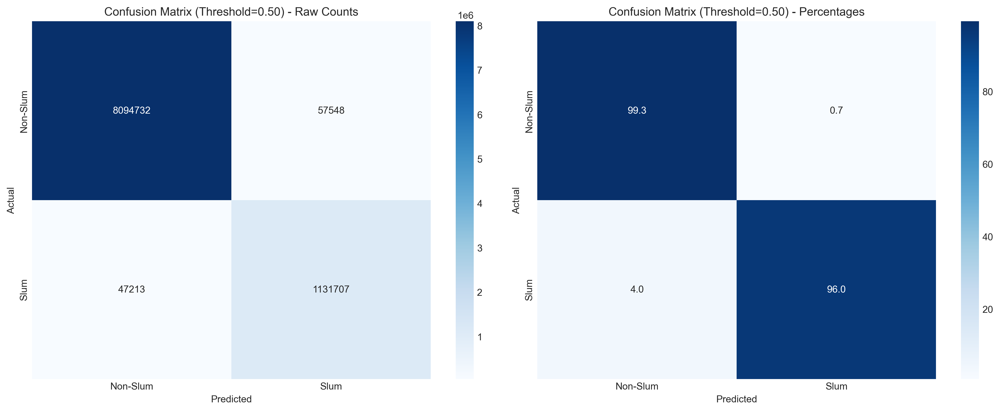
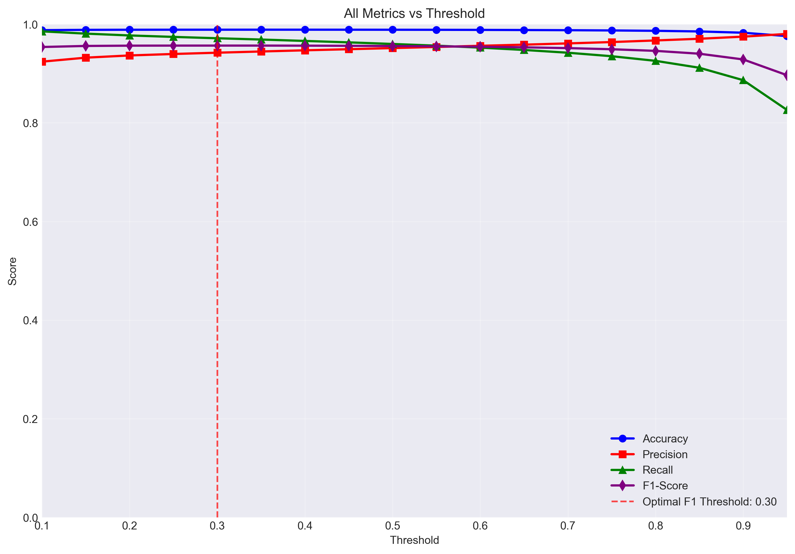
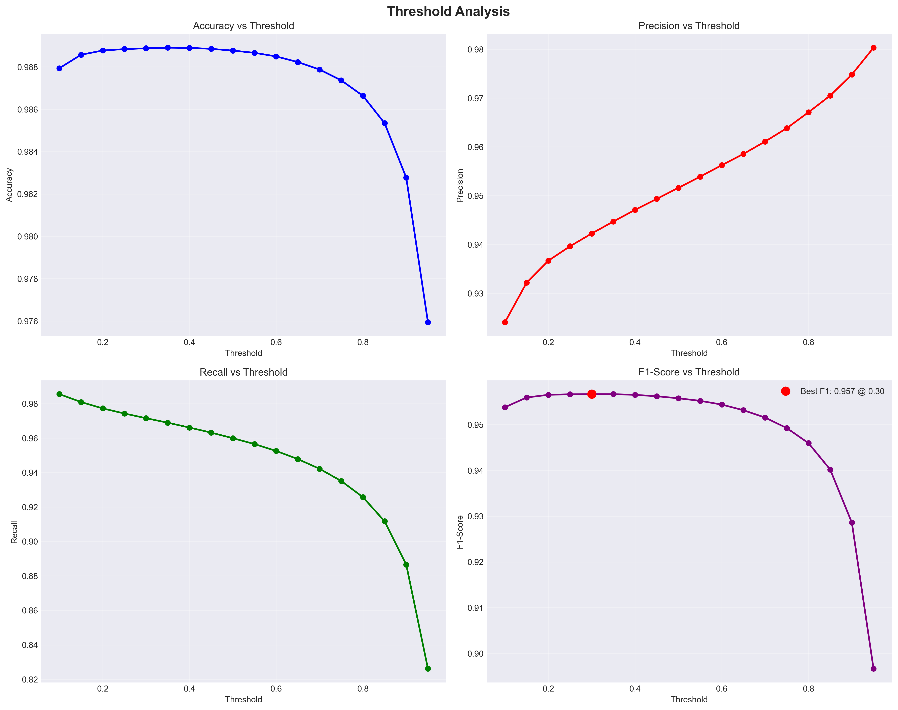
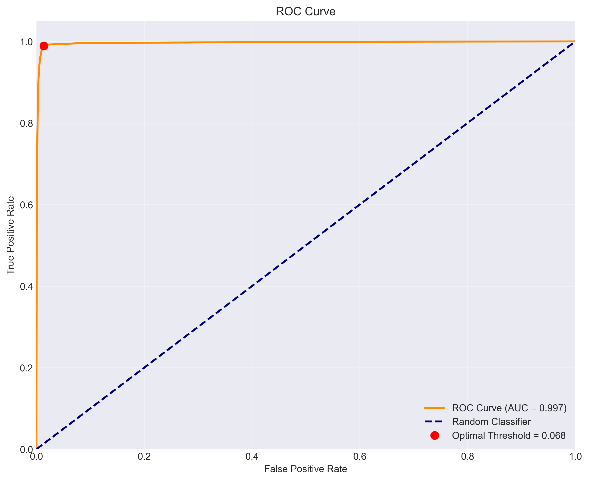
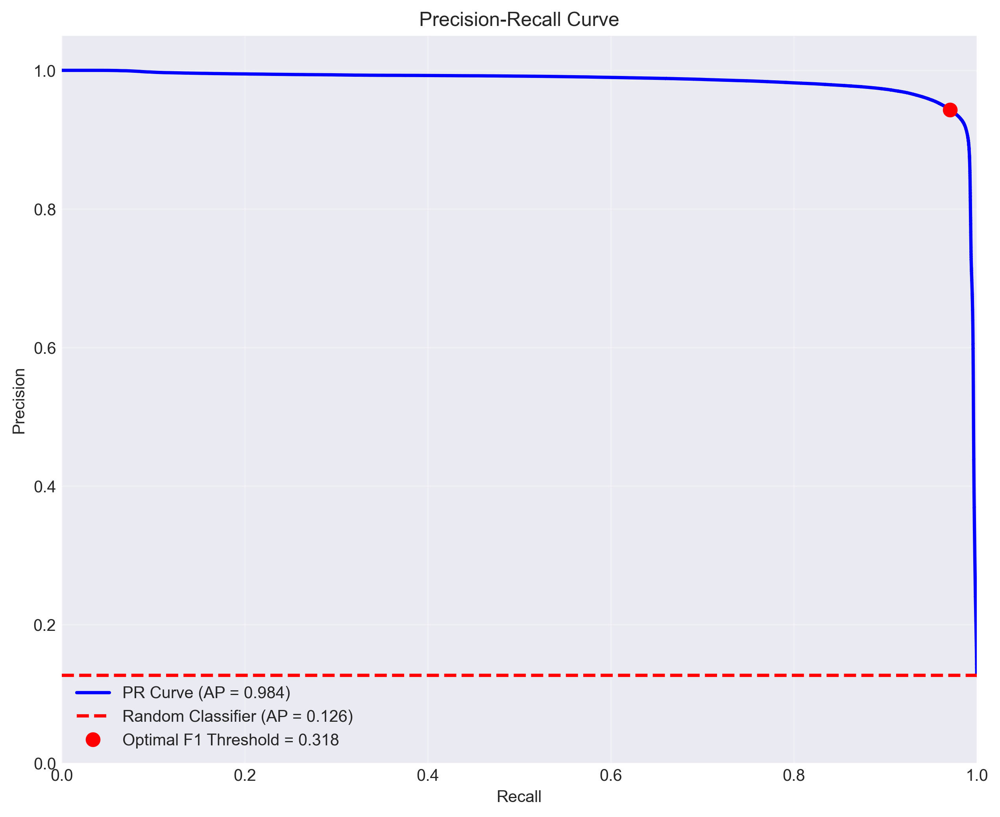
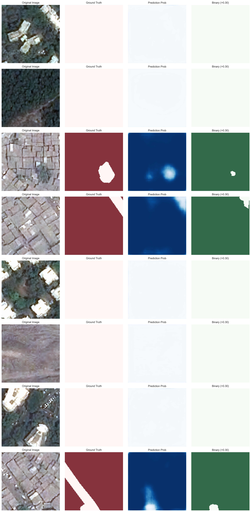
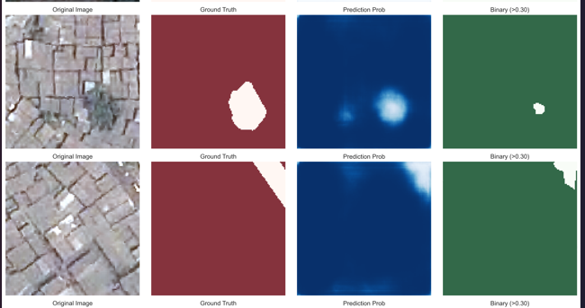
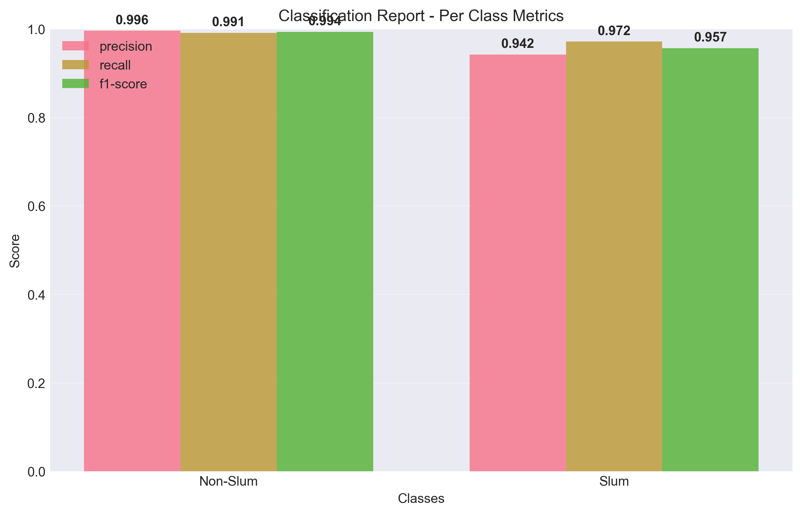

Comprehensive evaluation of UNet model with ResNet34 encoder on slum detection task - analyzing performance metrics, threshold optimization, and model effectiveness
This week focused on the thorough evaluation of our UNet model with ResNet34 encoder implementation. The model underwent extensive testing with multiple threshold values, comprehensive performance metrics analysis, and detailed visualization of results across various evaluation criteria.
Source: nichula01/Unet_model
Complete UNet implementation with ResNet34 encoder for slum detection
This repository contains the full model architecture, training pipeline, and evaluation scripts
The UNet model was configured with carefully selected parameters to optimize performance on the slum detection task. The architecture utilizes a ResNet34 encoder with transfer learning capabilities for enhanced feature extraction.

Detailed overview of model architecture, training parameters, and loss configuration used for the UNet implementation with ResNet34 encoder.
Comprehensive analysis of the training process, including loss curves, validation metrics, and convergence behavior over epochs.

Loss,F1 score ,IOU,Dice score,Learning Rateand validation matrices over epochs. The combined loss function (BCE + Dice + Focal) effectively handles class imbalance while the cosine scheduler provides optimal learning rate scheduling.
Comprehensive evaluation of model performance across different threshold values (0.30, 0.50, 0.70) to determine optimal binary classification cutoff point.



Detailed analysis of receiver operating characteristic (ROC) and precision-recall (PR) curves to evaluate model performance across all possible thresholds.


Combined visualization of ROC curve and Precision-Recall curve . The curves demonstrate excellent model performance with high area under curve values, indicating strong discrimination capability between slum and non-slum areas.

Visual comparison of original images, ground truth masks, and model predictions. The samples demonstrate the model's ability to accurately identify slum areas with high spatial precision and minimal noise in the predicted segmentation masks.


Identified areas for potential model enhancement and recommendations for future development to further improve slum detection accuracy and robustness.